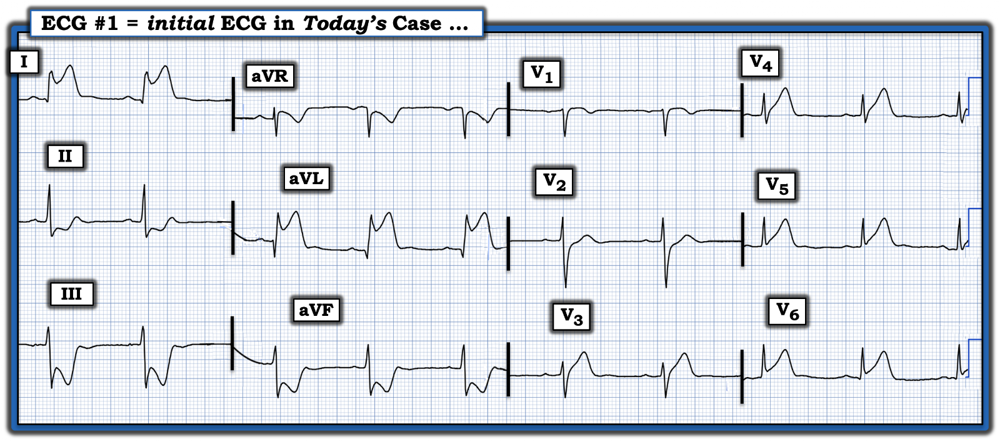
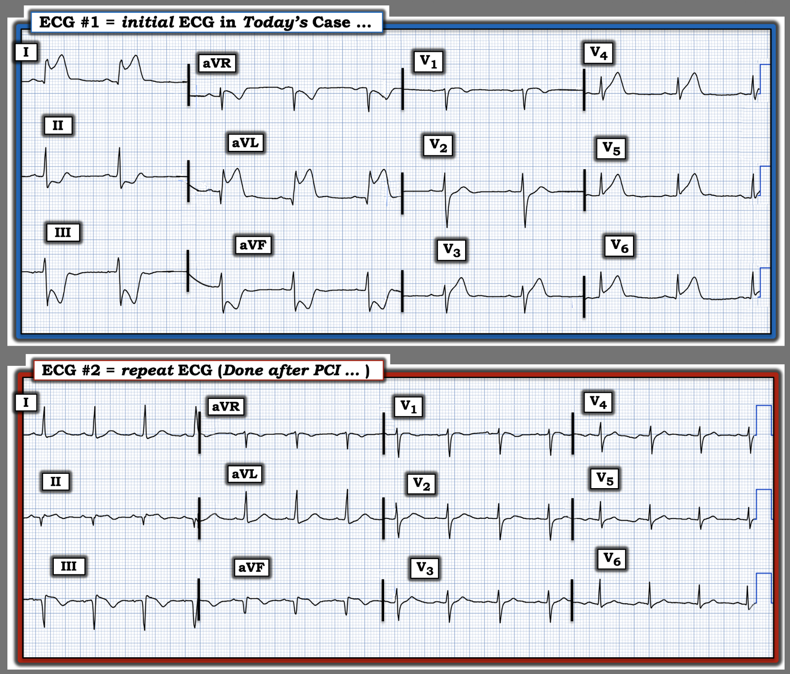
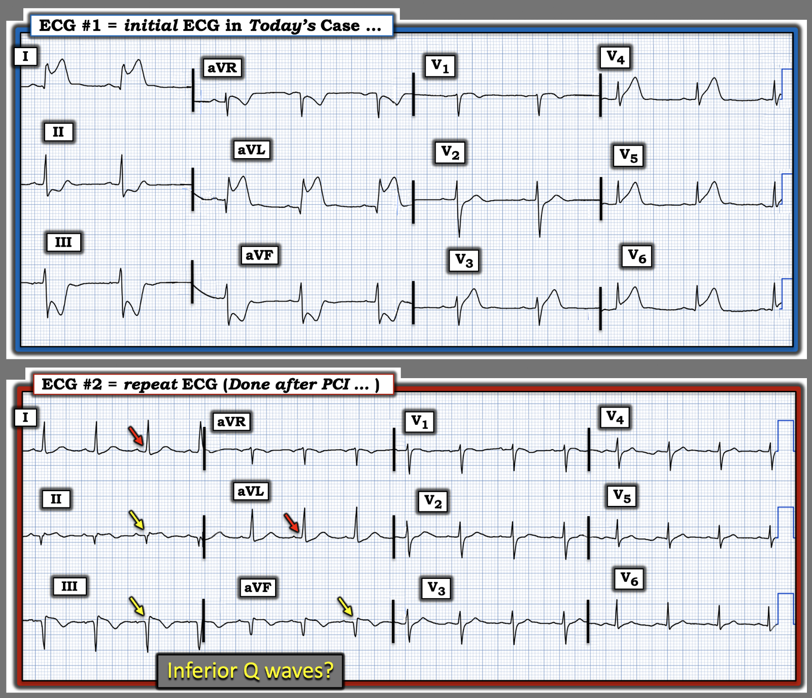
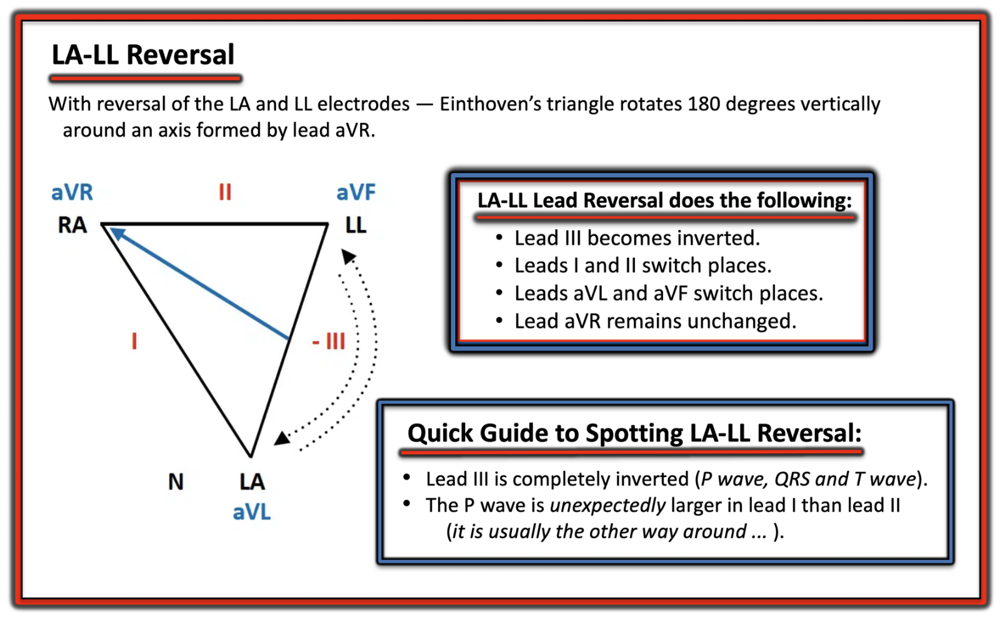
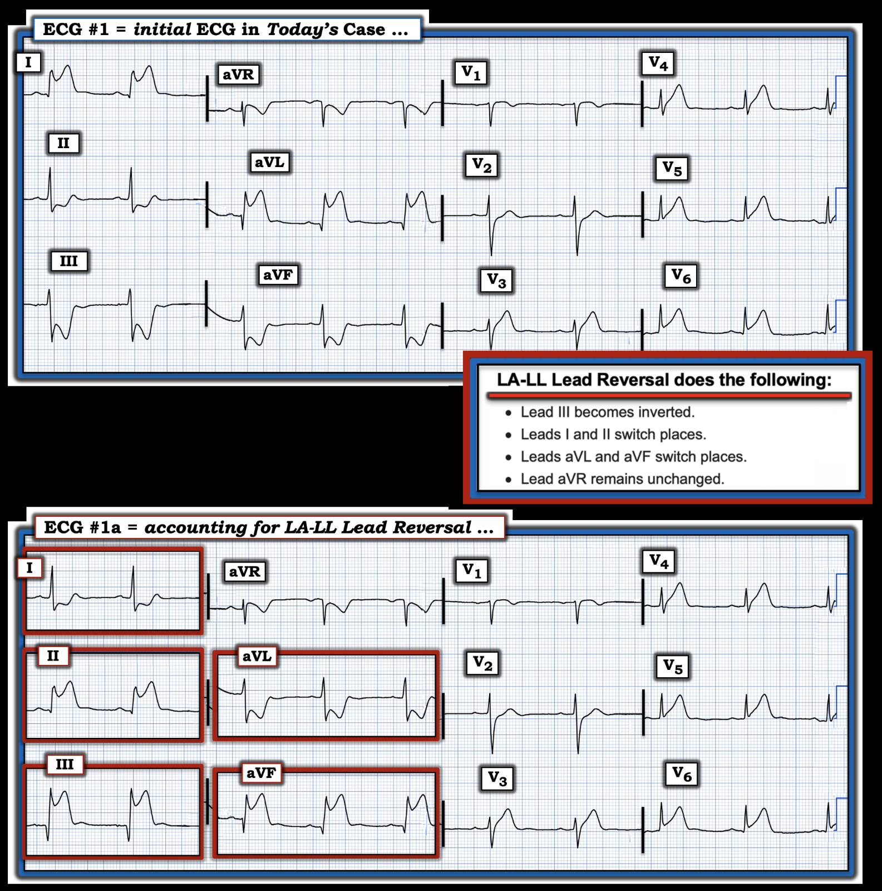
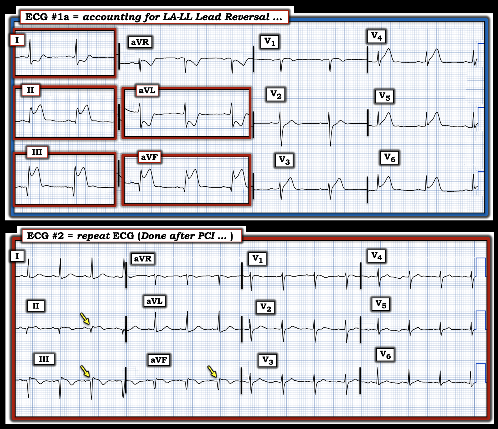
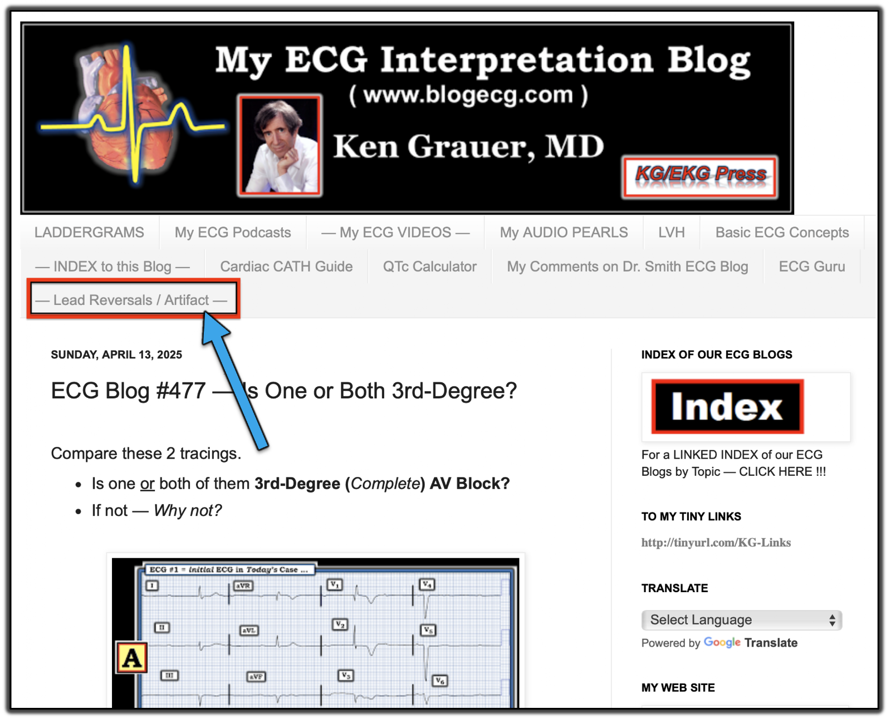

ECG Blog #541 — Nhồi máu cơ tim rõ ràng; ĐÂU là thủ phạm?
Điện tâm đồ ở Hình 1 được ghi từ một bệnh nhân đau ngực.
- LƯU Ý: Thử thách trong ca hôm nay không phải là nhận ra cần thông tim ngay — vì điều đó là hiển nhiên.
- Thử thách là xác định đâu là động mạch thủ phạm?


Vì sao cần quan tâm đến động mạch "thủ phạm"?
Ngoài thử thách trí tuệ khi cố dự đoán động mạch "thủ phạm" từ điện tâm đồ ban đầu của một bệnh nhân đau ngực — có những lúc việc nhận biết động mạch "thủ phạm" nhiều khả năng nhất thực sự vô giá về mặt lâm sàng.
- Chúng tôi biết có những ca mà việc nhận ra động mạch thủ phạm trên điện tâm đồ đã gợi ý cho bác sĩ chụp mạch quan sát đặc biệt kỹ một động mạch vành cụ thể trong lúc thông tim, để tìm một chỗ tắc cấp kín đáo nhưng quan trọng mà nếu không thì có thể không thấy rõ (điều này đặc biệt đúng với tắc kín đáo nhánh chéo thứ 1 hoặc thứ 2 của LAD, vốn không phải lúc nào cũng thấy rõ khi quan sát ban đầu).
- Một ví dụ khác cho thấy việc nhận biết động mạch thủ phạm có thể vô giá — là việc phân biệt giữa RCA (Right Coronary Artery — động mạch vành phải) với LCx (Left Circumflex — động mạch mũ trái). Lý do là các quyết định xử trí có thể bị ảnh hưởng tùy theo việc có khả năng tổn thương thất phải (RV involvement) hay không — điều thường gặp khi thủ phạm là đoạn gần RCA (và cực kỳ hiếm khi LCx là động mạch thủ phạm).
- Biết có tổn thương thất phải cấp đáng kể buộc phải chú ý cẩn thận đến huyết động liên quan đến thể tích (tức là, ưu tiên thông tim sớm kèm PCI, tránh NTG ngậm dưới lưỡi, bù dịch thận trọng cho tình trạng nhiều khả năng giảm thể tích) — Xem Shams và Parks: StatPearls, 2026 và ECG Blog #190 để biết thêm về nhồi máu thất phải (RV MI).
Điện tâm đồ ban đầu của ca hôm nay:
Ban đầu tôi nghĩ động mạch "thủ phạm" gây ra STEMI cấp rõ ràng ở Hình 1 hẳn phải là LCx vì:
- i) Sóng Q kèm ST chênh lên tối cấp rất rõ rệt thấy ở cả hai chuyển đạo bên cao ( = chuyển đạo I và aVL);
- ii) ST chênh xuống soi gương rõ rệt tương đương có ở cả 3 chuyển đạo dưới ( = chuyển đạo II,III,aVF); — và,
- iii) ST chênh lên tối cấp ở mức nhẹ hơn cũng thấy ở chuyển đạo trước tim bên V5,V6 (và ở mức ít hơn nữa ở chuyển đạo trước bên V3,V4 — vốn cho thấy đoạn ST thẳng đuỗn kín đáo, kèm kích thước tăng không tương xứng của các sóng ST-T quá "đồ sộ" ở các chuyển đạo này).
==================================
Ca bệnh tiếp diễn:
STEMI cấp rõ ràng này được nhận ra ngay — và phòng thông tim đã được kích hoạt.
- Diễn tiến của bệnh nhân này phức tạp. Trong lúc nong mạch — xuất hiện VT bền bỉ (Ventricular Tachycardia — nhịp nhanh thất) và bệnh nhân ngừng tim. Cần nhiều lần sốc điện trong quá trình hồi sức kéo dài.
- Cuối cùng, sau khi mở thông thành công động mạch bị tắc cấp là RCA — bệnh nhân đã ổn định.
- Không có tắc ở LCx.
Điện tâm đồ ghi lại sau PCI thành công RCA được trình bày ở Hình 2 — đặt bên dưới điện tâm đồ ban đầu.
CÂU HỎI:
Hãy NHÌN lại điện tâm đồ ban đầu của ca hôm nay ở Hình 2. So sánh với điện tâm đồ ghi lại sau PCI thành công RCA.
- Trong ca hôm nay — BẠN có giải thích được kết quả thông tim là tắc cấp RCA trong khi LCx không bị tắc không?
- Điện tâm đồ ghi lại có phù hợp với các kết quả thông tim này không?
- Những manh mối nào giúp xác định đúng mạch "thủ phạm" mà tôi đã bỏ sót trong phần mô tả các dấu hiệu ở trên của điện tâm đồ #1?


==================================
Điện tâm đồ sau PCI cho thấy gì?
Ở Hình 3 — tôi đánh dấu các dấu hiệu trên điện tâm đồ sau PCI phù hợp với tái tưới máu sau STEMI thành dưới cấp:
- Sóng Q lớn thấy ở mỗi chuyển đạo dưới (mũi tên VÀNG ở chuyển đạo II,III,aVF).
- Mức ST chênh lên còn lại ở các chuyển đạo dưới trên điện tâm đồ #2 là khiêm tốn — và có sóng T đảo ngược ở các chuyển đạo dưới, phù hợp với tái tưới máu sau PCI.
- Điều đáng chú ý là trên điện tâm đồ #2 không còn — các sóng Q từng có ở các chuyển đạo bên cao trên điện tâm đồ #1 (mũi tên ĐỎ ở chuyển đạo I,aVL).
- Các thay đổi sóng ST-T tối cấp trước đây thấy ở các chuyển đạo trước tim trước bên của điện tâm đồ #1 — không còn trên điện tâm đồ #2. Thay vào đó — sóng T ở các chuyển đạo trước tim rất nhỏ, và nếu có gì thì chỉ là — điểm J chênh xuống nhẹ.


==================================
Trả lời:
Lý do tôi đã nhầm khi nghĩ động mạch "thủ phạm" trong ca hôm nay là LCx — là vì ban đầu tôi đã không nhận ra đảo điện cực LA-LL!
- Theo kinh nghiệm của tôi — kiểu đảo điện cực dễ bị bỏ sót nhất là không nhận ra khi các điện cực LA (Left Arm — tay trái) và LL (Left Leg — chân trái) bị hoán đổi cho nhau (Xem ECG Blog #375 — để thấy thêm một ví dụ về điều này).
Điều gì xảy ra khi đảo điện cực LA-LL?
Tài liệu tham khảo trực tuyến “tra cứu nhanh” mà tôi yêu thích về các kiểu đặt sai vị trí điện cực thường gặp nhất là của LITFL ( = Life-In-The-Fast-Lane). Tôi đã dùng trang web tuyệt vời về chủ đề này mà họ đăng trên website của họ trong nhiều năm. Trang này rất DỄ tìm — Chỉ cần gõ “LITFL Lead Reversal” vào thanh Tìm kiếm — và đường link hiện ra ngay lập tức.
- Trang web LITFL này mô tả 7 kiểu đảo điện cực thường gặp nhất. Còn có những khả năng khác (tức là, khi có thể đặt sai vị trí nhiều điện cực) — nhưng những kiểu này ít gặp hơn và khó dự đoán hơn nhiều chỉ từ một điện tâm đồ duy nhất.
- Cho đến nay (!) — kiểu đảo điện cực thường gặp nhất là nhầm lẫn giữa điện cực LA (Left Arm — tay trái) và RA (Right Arm — tay phải). Kiểu đảo điện cực này thường DỄ nhận ra — vì nó điển hình tạo ra hình ảnh âm toàn bộ (global negativity) của sóng P, QRS và sóng T ở chuyển đạo I — điều mà hầu như không bao giờ thấy trong bình thường (Xem ECG Blog #264 — để thấy một ví dụ về đảo điện cực LA-RA).
- Ngược lại — rất DỄ bỏ sót đảo điện cực LA-LL — vì hình ảnh điện tâm đồ gặp trong kiểu đảo điện cực này không nổi bật ngay là “bất thường” về mặt sinh lý. Để cho rõ, ở Hình 4 — tôi đã vẽ lại, có chỉnh sửa nhẹ, hình minh họa từ LITFL về đảo điện cực LA-LL.


==================================
"Manh mối" gợi ý đảo điện cực LA-LL:
Như gợi ý ở Hình 4 trong phần "Hướng dẫn nhanh" để nhận ra đảo điện cực LA-LL — chính kích thước tương đối của sóng P ở chuyển đạo I so với kích thước sóng P ở chuyển đạo II mới là manh mối MẤU CHỐT.
- ĐIỂM THEN CHỐT (PEARL) #1: Vì hướng di chuyển chung của xung điện trong nhịp xoang (khi xung đi từ nút SA đến nút AV) — hướng gần nhất về phía vị trí của chuyển đạo II (chuyển đạo II nằm ở +60 độ trên mặt phẳng trán) — nên sóng P trong nhịp xoang bình thường không chỉ phải dương ở chuyển đạo II — mà còn phải lớn hơn ở chuyển đạo II so với ở chuyển đạo I (vốn định hướng ở 0 độ trên mặt phẳng trán).
- ĐIỂM THEN CHỐT (PEARL) #2: Như vừa nói — thường rất DỄ bỏ sót đảo điện cực LA-LL vì những thay đổi hình dạng QRST do kiểu đảo điện cực này tạo ra thường trông không đủ "bất thường" để gợi nghi ngờ có một dạng đặt sai vị trí điện cực nào đó. Điều này càng đúng nếu sóng P ở các chuyển đạo chi tương đối nhỏ — như trong ca hôm nay.
- Ngoài ra, nếu thay vì nhịp xoang mà có một nhịp nhĩ lạc chỗ — thì có thể sóng P dương ở chuyển đạo II không nhất thiết lớn hơn các sóng P dương ở các chuyển đạo chi khác.
Điện tâm đồ hôm nay lẽ ra phải trông như thế nào ...
Hãy xem Hình 5 bên dưới — ở điện tâm đồ #1 và điện tâm đồ #1a, trong đó tôi đã tái hiện điện tâm đồ ban đầu của ca hôm nay — và so sánh với hình ảnh mà điện tâm đồ ban đầu hôm nay lẽ ra sẽ có nếu các điện cực LA và LL được đặt đúng vị trí.
- Lưu ý ở Hình 5 rằng hình dạng QRST khi đảo điện cực LA-LL không làm thay đổi hình ảnh các phức bộ ở chuyển đạo trước tim — vì việc đặt sai điện cực LA và LL không liên quan gì đến hình ảnh các phức bộ ở 6 chuyển đạo trước tim đơn cực.
- Cũng lưu ý trên điện tâm đồ #1 — biên độ thấp nói chung của sóng P ở cả 12 chuyển đạo. Vì vậy — tôi vẫn đọc nhịp trên bản ghi ban đầu hôm nay là nhịp xoang, vì dù sóng P ở chuyển đạo II rất nhỏ — sóng P nhỏ này ở chuyển đạo II vẫn dương.
- Dù vậy — tôi có nhận thấy mức ST chênh lên ở các chuyển đạo bên cao I và aVL có vẻ quá mức (tôi hiếm khi thấy ST chênh lên nhiều như vậy ở chuyển đạo I và aVL). Tuy nhiên, ST chênh lên quá mức này ở chuyển đạo I và aVL đã không khiến tôi nghĩ đến đảo điện cực LA-LL — vì tôi quy các thay đổi này cho tắc cấp một LCx ưu thế (điều này cũng giải thích hình ảnh sóng ST-T tối cấp ở chuyển đạo V3 đến V6 trên điện tâm đồ #1).
Giờ hãy xem bản ghi sơ đồ ở phía dưới trong Hình 5.
- Sau khi tính đến các thay đổi dự kiến khi có đảo điện cực LA-LL — Chẳng phải hình ảnh các chuyển đạo chi trên điện tâm đồ #1a giờ trông giống một STEMI thành dưới diện rộng hay sao?


==================================
NHÌN lại điện tâm đồ sau PCI :
Tôi khép lại ca hôm nay với Hình 6, ghép điện tâm đồ #1a (tức là hình ảnh mà bản ghi ban đầu hôm nay lẽ ra sẽ có nếu các điện cực LA và LL được đặt đúng vị trí) — với điện tâm đồ ghi lại sau PCI thành công RCA "thủ phạm".
Câu hỏi kết thúc:
- Diễn tiến các thay đổi QRST giữa 2 điện tâm đồ liên tiếp ở Hình 6 giờ đã hợp lý chưa?


==================================
KẾT LUẬN CA BỆNH:
Giờ đây chúng ta thấy một kết cục hoàn toàn hợp lý cho ca hôm nay — với các thay đổi điện tâm đồ tiến triển ở Hình 6 đúng như dự kiến sau tái tưới máu thành công bằng PCI cho RCA "thủ phạm".
- Điện tâm đồ #1a — cho thấy nhồi máu thành dưới cấp lan rộng đang diễn ra, với sóng Q đang hình thành và ST chênh lên tối cấp rõ rệt ở chuyển đạo II,III,aVF — kèm ST chênh xuống soi gương rõ rệt tương đương ở các chuyển đạo bên cao I và aVL.
- Sóng ST-T tối cấp (tức là, "đồ sộ" không tương xứng) ở chuyển đạo trước tim V3 đến V6 — phản ánh tổn thương thành bên cấp. Không hiếm gặp hình ảnh này khi tắc cấp một RCA ưu thế, trong đó các nhánh sau bên vòng quanh thất trái để cấp máu cho thành sau bên (dù các thay đổi sóng ST-T cấp ở thành bên thường chỉ giới hạn ở chuyển đạo V5,V6).
- Điện tâm đồ #1a cũng phù hợp với tổn thương thành sau — vì chuyển đạo V2 không có chút ST chênh lên dốc lên nhẹ vẫn thường thấy ở chuyển đạo này khi có OMI thành sau (tức là, tôi nghi rằng ST chênh xuống thường thấy ở chuyển đạo V2, V3 khi có OMI thành sau — đã bị giảm bớt bởi các thay đổi tối cấp xảy ra ở vùng khác).
- Chẳng hạn, ST chênh lên dạng vòm nhẹ ở chuyển đạo V1 đi kèm tắc cấp RCA — có thể là dấu hiệu của tổn thương thất phải cấp. Việc ST chênh xuống ở các chuyển đạo trước bị giảm bớt bởi ST chênh lên phía bên phải do nhồi máu thất phải cũng có thể giải thích việc không có ST chênh xuống rõ ở chuyển đạo V2 (tuy nhiên sẽ cần chuyển đạo bên phải để xác nhận nhồi máu thất phải).
Sau PCI thành công RCA — giờ đã thấy các thay đổi sóng ST-T tiến triển như dự kiến:
- Điện tâm đồ #2 — cho thấy tiến triển thành sóng Q nhồi máu lớn hơn ở mỗi chuyển đạo dưới. "Tin tốt" — là điều này đi kèm sự xẹp xuống của các biến đổi sóng ST-T rõ rệt từng thấy trên bản ghi ban đầu:
- ST chênh lên còn lại tối thiểu vẫn tồn tại ở các chuyển đạo dưới, nay biểu hiện sóng T tái tưới máu ở chuyển đạo II,III,aVF.
- ST chênh xuống soi gương nổi bật từng thấy ở chuyển đạo I và aVL đã gần như hết hoàn toàn.
- Các sóng ST-T tối cấp trước đây thấy ở chuyển đạo V3 đến V6 không còn nữa.
- Đoạn ST ở chuyển đạo V1 vẫn dạng vòm — nhưng không còn thấy ST chênh lên kín đáo.
==================================
Lời cảm ơn: Tôi xin cảm ơn Op. Sanooj (đến từ Calicut, Ấn Độ) — đã cho phép tôi sử dụng ca bệnh và bản ghi này.
==================================

PHẦN BỔ SUNG:
Tôi đã thêm Thẻ (Tab) về "Sự cố" kỹ thuật — vào Menu ở đầu mỗi trang của ECG Blog này:


Quá thường xuyên, các trường hợp đảo điện cực, nhiễu không được nghi ngờ và các "sự cố kỹ thuật" khác không được nhận ra — dẫn đến những hệ quả sai lầm về chẩn đoán và điều trị.
- Với mong muốn giúp nhận ra các ca này dễ dàng hơn — tôi đang xây dựng một danh sách cập nhật liên tục trên trang này với các ĐƯỜNG LINK tới những ví dụ tôi đã đăng trên ECG Blog này, cũng như trên ECG Blog của Dr. Smith, nơi tôi thường xuyên viết bình luận.